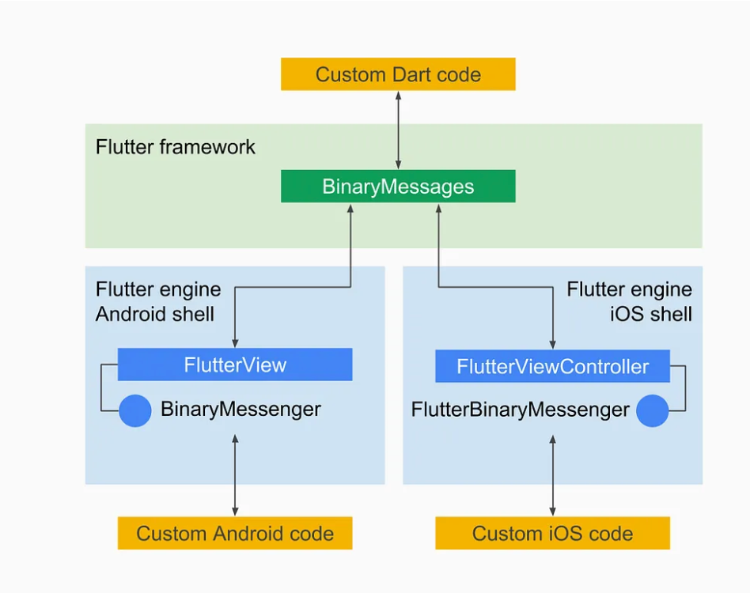
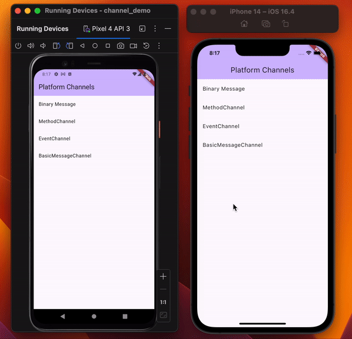

Flutter 是开发跨平台应用程序的完美工具。使用 Flutter，您可以轻松制作出性能卓越、美观大方的应用程序。但为了访问原生平台 API，您需要与原生平台进行通信。
Flutter 只能理解 Dart 语言，原生平台只能理解它们各自的编程语言。那么，Flutter 和原生平台是如何相互通信的呢？
是 二进制
Flutter 通过传递二进制消息与本机平台通信。为了区分消息，使用了通道。那么我们如何跨平台发送这些二进制消息呢？
我们可以利用 BinaryMessenger 类跨平台发送消息。
BinaryMessenger 类是由 Flutter 团队定义的信使类，它跨 Flutter 平台屏障发送二进制数据。该类还能为接收到的信息注册处理程序。

下面的代码使用 BinaryMessenger 通过通道 foo 跨平台发送二进制信息。
import 'dart:convert';
import 'package:flutter/services.dart';
import 'dart:ui' as ui;
class CustomBinaryMessenger {
// 将给定值作为二进制信息发送的静态方法。
static Future<void> givenValue(String data) async {
// 创建一个缓冲区来保存二进制数据。
final WriteBuffer buffer = WriteBuffer();
// Convert the given data string into UTF-8 bytes.
final List<int> utf8Bytes = utf8.encode(data);
// Convert the UTF-8 bytes into an Uint8List.
final Uint8List utf8Int8List = Uint8List.fromList(utf8Bytes);
// Put the Uint8List into the buffer.
buffer.putUint8List(utf8Int8List);
// Get the final binary message data from the buffer.
final ByteData message = buffer.done();
// 通过 chaneel `foo` 使用 'Messenger' 类发送二进制消息。
await Messenger().send('foo', message);
return;
}
}
// BinaryMessenger 接口的自定义实现。为了举例说明，我在这里只处理发送
class Messenger implements BinaryMessenger {
@override
// 处理传入的平台信息。在这种情况下，它会抛出一个不支持的错误。
Future<void> handlePlatformMessage(
String channel, ByteData? data, PlatformMessageResponseCallback? callback) {
throw UnsupportedError("This platform message handling is not supported.");
}
@override
// 使用 "ui.PlatformDispatcher "向平台发送二进制信息。
Future<ByteData?>? send(String channel, ByteData? message) {
// Use the 'ui.PlatformDispatcher' to send the platform message and handle the callback
ui.PlatformDispatcher.instance.sendPlatformMessage(channel, message, (data) {});
return null;
}
@override
// 为收到的信息设置一个处理程序。在这种情况下，它会抛出一个不支持的错误。
void setMessageHandler(String channel, MessageHandler? handler) {
throw UnsupportedError("Setting message handler is not supported.");
}
}在Android上，您可以使用以下代码接收它：
class MainActivity : FlutterActivity() {
override fun configureFlutterEngine(flutterEngine: FlutterEngine) {
super.configureFlutterEngine(flutterEngine)
// 配置二进制信使以处理来自 Flutter 的消息。
flutterEngine.dartExecutor.binaryMessenger.setMessageHandler("foo") { message, reply ->
message?.order(ByteOrder.nativeOrder()) // 确保正确的字节顺序。
val data = decodeUtf8String(message!!) // 将二进制数据解码为 UTF-8 字符串。
val x = message.toString() // 将消息转换为字符串以进行演示。
// 显示带有收到的消息的Toast。
Toast.makeText(this, "Received message from Flutter: $data", Toast.LENGTH_SHORT).show()
reply.reply(null)
}
// 调用超级方法以完成FlutterEngine配置。
super.configureFlutterEngine(flutterEngine)
}
// 将 ByteBuffer 解码为 UTF-8 字符串的函数。
private fun decodeUtf8String(byteBuffer: ByteBuffer): String {
return try {
val byteArray = ByteArray(byteBuffer.remaining())
byteBuffer.get(byteArray)
String(byteArray, Charsets.UTF_8)
} catch (e: Exception) {
e.printStackTrace()
""
}
}
}
同样，对于 IOS，
import UIKit
import Flutter
@UIApplicationMain
@objc class AppDelegate: FlutterAppDelegate {
override func application(
_ application: UIApplication,
didFinishLaunchingWithOptions launchOptions: [UIApplication.LaunchOptionsKey: Any]?
) -> Bool {
let flutterViewController = self.window.rootViewController as! FlutterViewController
// 配置二进制信使以处理来自 Flutter 的消息。
let binaryMessenger = flutterViewController.engine!.binaryMessenger
binaryMessenger.setMessageHandlerOnChannel("foo", binaryMessageHandler: { [weak self] message, reply in
// 确保正确的字节顺序。
guard let message = message else {
reply(nil)
return
}
// 将二进制数据解码为 UTF-8 字符串。
if let data = String(data: message, encoding: .utf8) {
let x = message.debugDescription // 将消息转换为字符串以进行演示。
// 显示带有收到消息的提示。
let alertController = UIAlertController(
title: "Message from Flutter",
message: data,
preferredStyle: .alert
)
alertController.addAction(UIAlertAction(title: "OK", style: .default, handler: nil))
flutterViewController.present(alertController, animated: true, completion: nil)
}
reply(nil)
}
)
GeneratedPluginRegistrant.register(with: self)
return super.application(application, didFinishLaunchingWithOptions: launchOptions)
}
// 将 ByteBuffer 解码为 UTF-8 字符串的函数。
private func decodeUtf8String(byteBuffer: FlutterStandardTypedData) -> String? {
let byteArray = [UInt8](byteBuffer.data)
return String(bytes: byteArray, encoding: .utf8)
}
}

通信是双向的，您可以从本机平台发送到 Flutter。确保在我们的类 Messenger 中实现 setMessageHandler 以接收来自本机平台的二进制消息并对其进行解码。只需反转我们的代码流，您就可以发送：
在 IOS 中，使用
// 从平台向 flutter 发送二进制信息。它将通道和信息作为参数
flutterViewController.engine!.binaryMessenger.send(onChannel: <#T##String#>, message: <#T##Data?#>)
在安卓中使用：
// 将二进制信息从平台发送至 flutter。
flutterEngine.dartExecutor.binaryMessenger.send()
消息和响应以异步方式传递，以确保用户界面保持响应。
现在，您可以将消息从 Flutter 传递到本机平台，反之亦然。但是，正如您在处理二进制消息时所看到的，我们必须担心编码、解码和处理寄存器等。它可能导致代码冗长并增加代码的复杂性。
那么，解决方案是什么？
平台通道：让上述过程变得更加简单，就引出了平台通道。平台通道是一种将通道名称和编解码器结合在一起的结构。
这种配对可将信息转换成二进制格式进行传输，并在接收时将其从二进制格式转换回来。它让使用本机平台变得更加容易。
请看这个名为 MethodChannel 的平台通道。如果查看一下代码，就会发现它正在处理自己的 BinaryMessenger。
后面详细介绍平台通道以及如何使用它将消息在 Flutter 和本机平台之间的传递。
[1] BinaryMessenger: https://api.flutter.dev/flutter/services/BinaryMessenger-class.html[2] UInt8: byteBuffer.data[3] MethodChannel : https://github.com/flutter/flutter/blob/efbf63d9c6/packages/flutter/lib/src/services/platform_channel.dart#L245